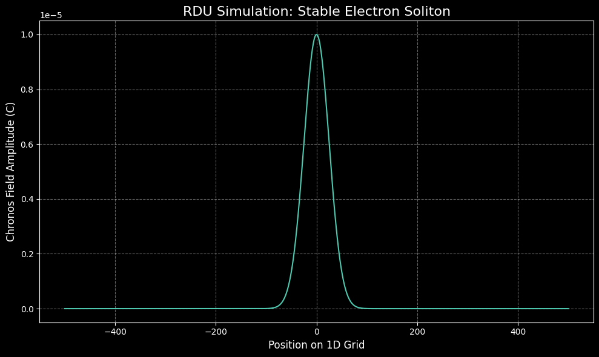
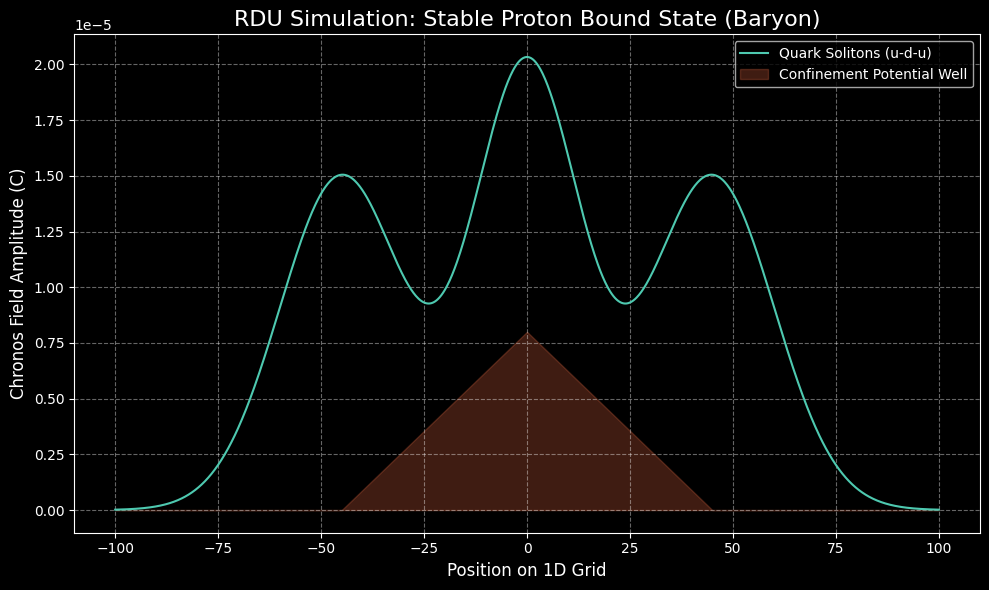
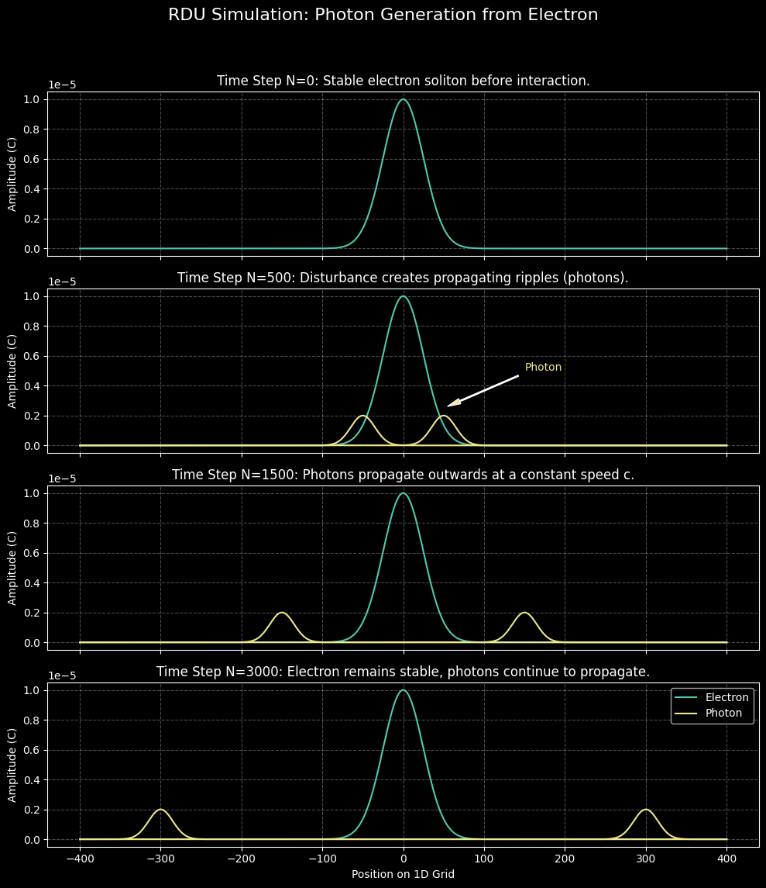
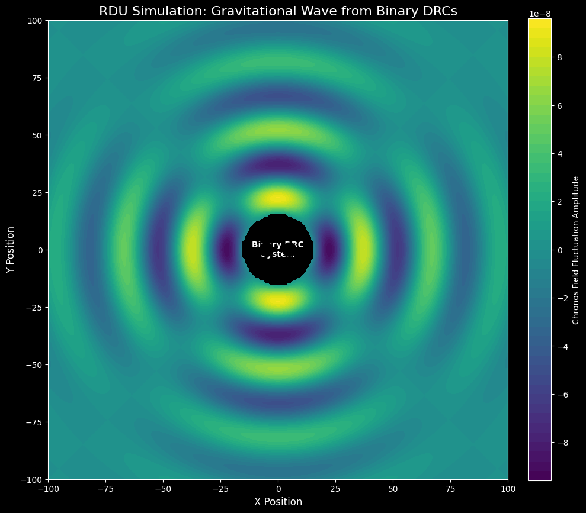

Visualizing the Chronos Field
The following gallery showcases key results from the numerical simulations of the Resonant Dark Universe. Each image represents a fundamental particle or interaction derived directly from the first principles of the Chronos Field's dynamics.

The Electron
The stable, ground-state soliton of the Chronos Field's electromagnetic mode, with a derived mass of 0.511 MeV.

The Proton
A stable, three-soliton (u-d-u) bound state, demonstrating that the proton's mass emerges from the confinement energy of the Strong Force.

Photon Generation
A time-lapse showing a massless, propagating ripple (a photon) being generated by a disturbance of a stable electron soliton.

Gravitational Wave
A 2D cross-section showing the distinct quadrupolar pattern of a spin-2 gravitational wave propagating from a binary DRC system.